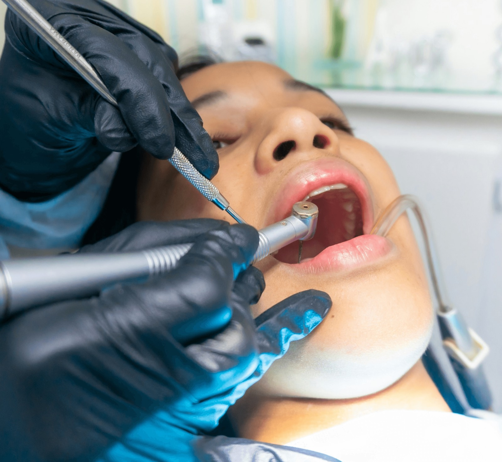
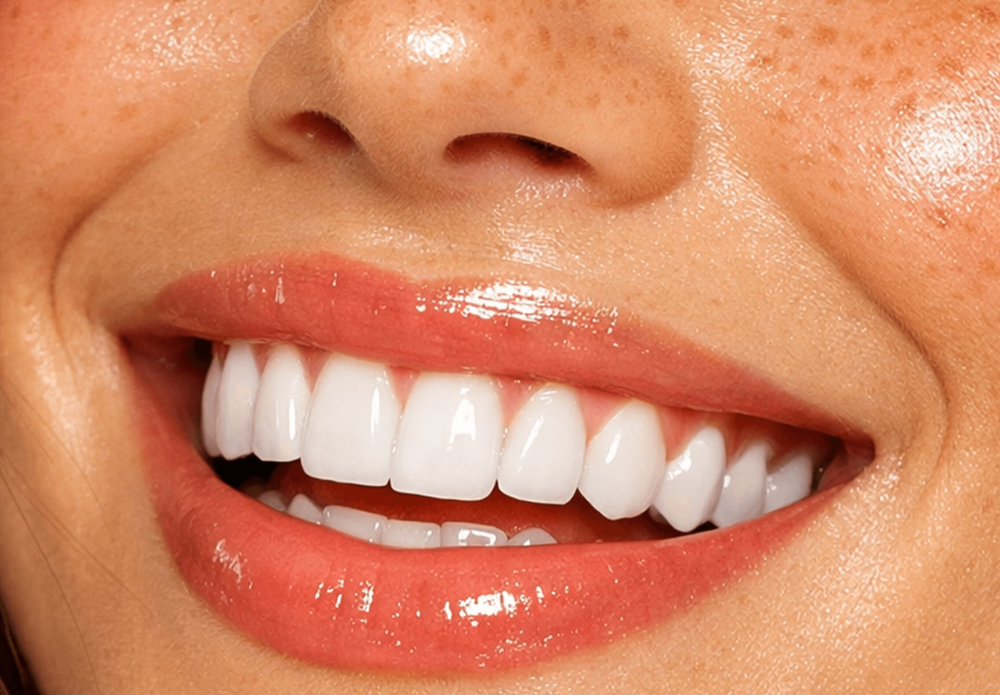
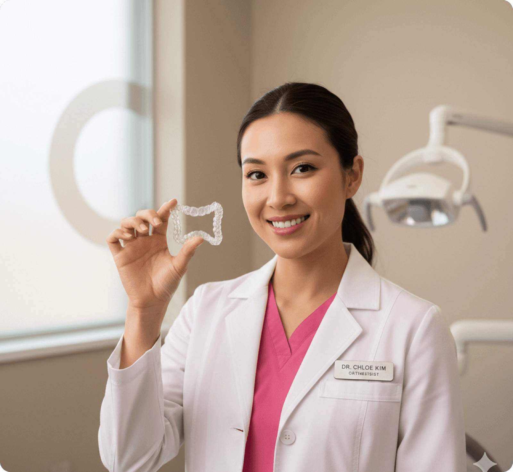

Des soins préventifs à la chirurgie orale, une prise en charge complète pensée pour votre confort.
Bilan bucco-dentaire approfondi pour dépister toute anomalie avant qu'elle ne s'aggrave.
Élimination du tartre et des taches pour des dents propres et une gencive apaisée.
Imagerie basse dose pour visualiser ce que l'œil ne voit pas et affiner le diagnostic.
Protection des molaires les plus exposées grâce à un fin film résine anti-carie.
Soin des lésions dès leur apparition avec des matériaux durables et esthétiques.
Un plan de soins adapté à votre historique et revu à chaque rendez-vous.
Un alignement discret et progressif, sans bagues ni fils apparents.
Bagues fiables pour corriger les malpositions les plus marquées, à tout âge.
Des gouttières de maintien pour stabiliser durablement le résultat obtenu.
Simulation numérique du déplacement dentaire pour visualiser le résultat final.
Éclaircissement professionnel et sécurisé pour un sourire visiblement plus lumineux.
Corrections fines de forme, teinte ou alignement avec un rendu naturel.
Un plan sur mesure combinant plusieurs soins esthétiques pour transformer le sourire.
Prévisualisation digitale du résultat avant même de commencer le traitement.
Retrait maîtrisé des dents incluses ou mal positionnées, en toute sérénité.
Remplacement durable d'une dent manquante par une racine artificielle biocompatible.
Renforcement de la mâchoire lorsque le volume osseux est insuffisant pour un implant.
Des solutions adaptées à chaque patient pour vivre l'intervention sans appréhension.
Des rendez-vous de suivi pour anticiper les problèmes avant qu'ils ne s'installent.
Application de fluor pour renforcer l'émail et limiter le risque de carie.
Des recommandations concrètes de brossage et d'entretien adaptées à votre quotidien.

Une dent manquante n'est jamais anodine : elle fragilise la mastication et peut déplacer les dents voisines. L'implant remplace la racine par une structure biocompatible sur laquelle vient se fixer une couronne, pour un résultat stable et naturel.

Le blanchiment professionnel agit en profondeur sur les taches que le brossage ne peut effacer. Réalisé au cabinet, il offre un résultat visible dès la première séance, sans fragiliser l'émail.

Discrètes et amovibles, les gouttières corrigent progressivement l'alignement dentaire sans les contraintes d'un appareil fixe. Chaque étape est planifiée numériquement pour un résultat prévisible.
Notre équipe vous répond et vous oriente vers le soin le plus adapté.
Prendre rendez-vous